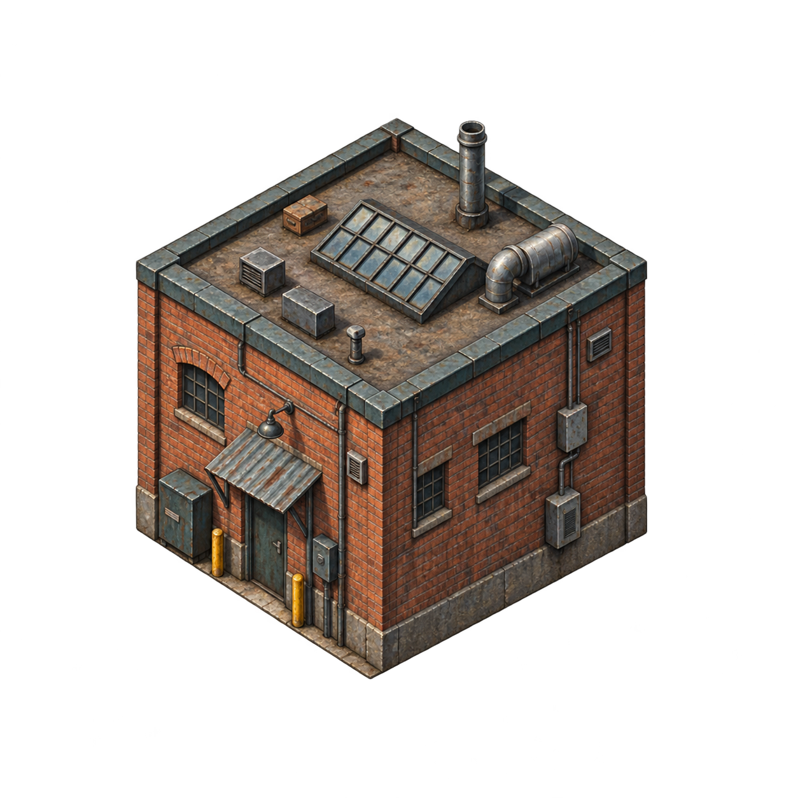
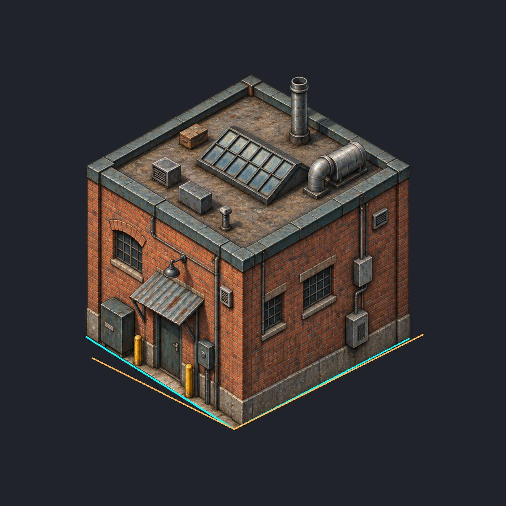
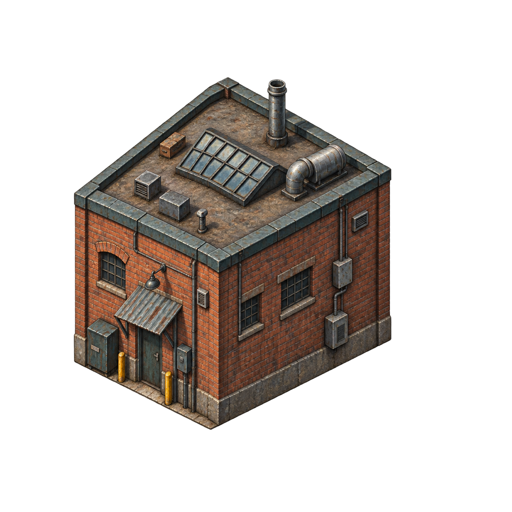
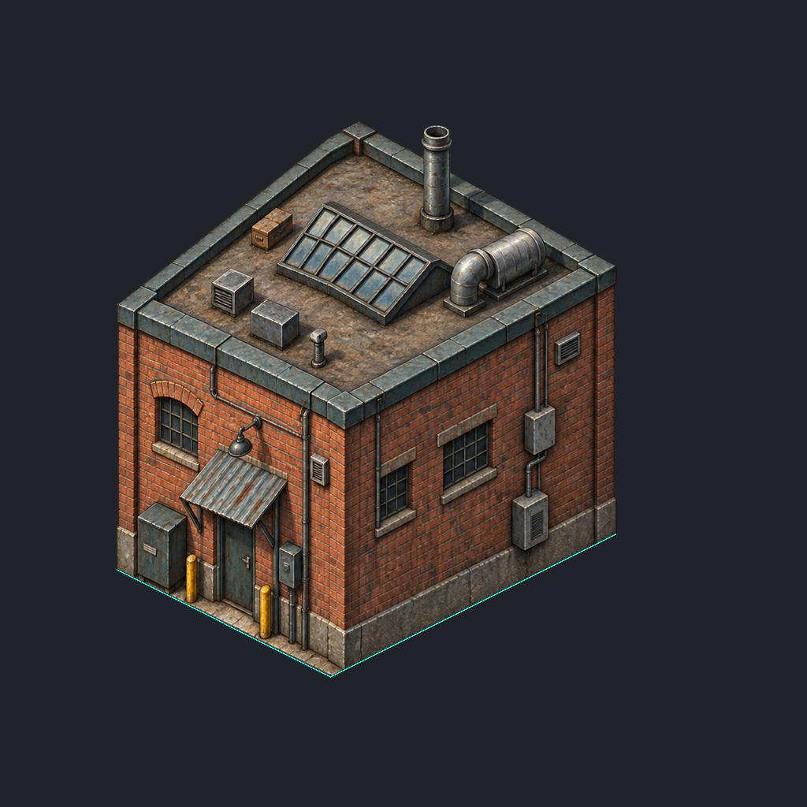
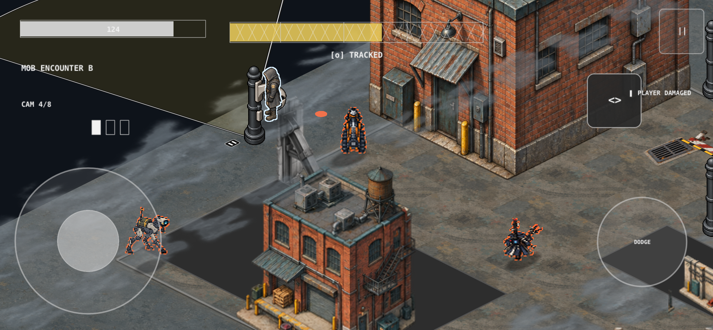
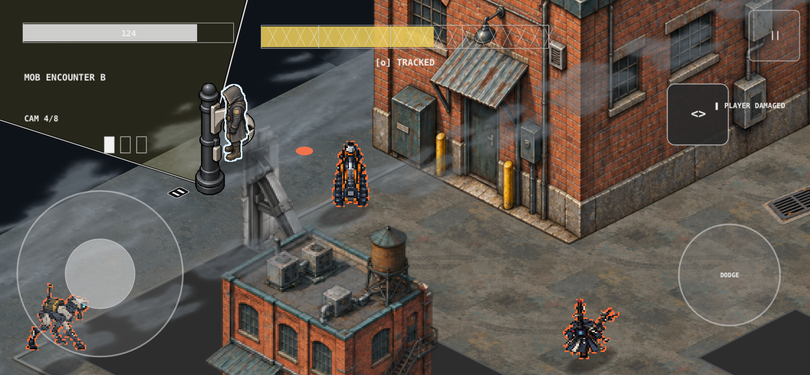

Preserves the brick building, service awning and rooftop equipment. Generated with the built-in image tool. This is source art for review, not a runtime acceptance.

Cyan: provisional observed base. Amber: required projected footprint, using a front-anchored uniform-scale fit. The remaining disagreement is visible and has not been hidden by stretching the sprite or moving collision.

Next: correct the base geometry before renderer integration. Full opacity, ground registration, depth and contact checks remain required.
Two recorded affine regions correct the visible base while preserving vertical lines. This is an explicit source re-authoring candidate; roof and equipment distortion remain part of visual review.


Focused test passed: 1 test, 0 failures. Revised service-yard-B is at upper right. Three marked base points match the projected authoritative corners. Other assets remain unchanged. The roof extends beyond this viewport; this is registration evidence, not final scene acceptance.

